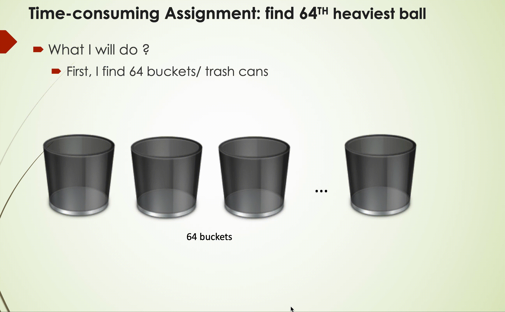
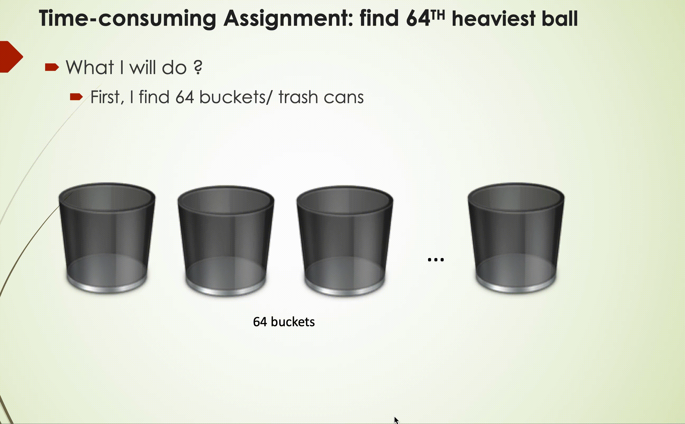

Research Interests
 |
MODEL BASED VISION
Outdoor Vehicle Detection | Advisor: Prof. Maxim Likhachev
Research Staff, Search-Based Planning Lab Robotics Institute, Carnegie Mellon University
Proposed Vehicle-PERCH, a novel 3D vehicle detection framework that can detect vehicle 3D pose through an analysis-by- synthesis manner. The algorithm effectively integrates 2D and 3D information, thus provides REAL-TIME capability
Applied unsupervised clustering method (Gaussian mixture models) to separate vehicles into twelve categories based on vehicle size information, then constructed a dozen vehicle 3D models (microcar, sedan, compact car, SUV, etc.)
Experimented on the KITTI dataset. The results show that Vehicle-PERCH achieves ON PAR 3D detection & localization performance with the state-of-the-art learning-based methods, WITHOUT using 3D pose annotation data
Submitted to ICRA 2021
Yupeng Han, Sandip Aine and Maxim Likhachev, "Real-time 3D Perception via Search for Vehicle Detection with No Pose Annotated Training Data", IEEE International Conference on Robotics and Automation (ICRA) 2021[Under Review]
Indoor object 6DOF Pose Estimation |Advisor: Prof. Maxim Likhachev
Research Staff, Search-Based Planning Lab Robotics Institute, Carnegie Mellon University
Studied Perception Via Search (PERCH) is a class of algorithms that is first rendering scenes with different object poses, then search for the best explanation of the observed scene in the space of possible rendered scenes, thus predict the object pose while accounting for occlusion
-
Studied space rotation formalisms, took advantage of the object's geometric symmetry of the object to reduce redundant space rotation proposals, thereby achieving an algorithm speedup (over 50%)
-
Tested on the open dataset (YCB), results show that our algorithm SURPASSES state-of-the-art 6-DOF pose estimation methods with remarkable margins without need for any ground truth pose annotations
[ Paper] | [ Github] | [ Full Video Link]
Agarwal Aditya, Han Yupeng, and Maxim Likhachev, "PERCH 2.0 : Fast and Accurate GPU-based Perception via Search for Object Pose Estimation", IEEE International Conference on Intelligent Robots and Systems 2020
SYSTEM ANALYSIS
Modeling and Analysis of Complex System | Advisor: Prof. Jitesh Panchal
Master Student, Design Engineering Lab at Purdue(DELP), ME Department, Purdue University
Solved the difficulty of service seekers when faced with a large number of service providers, also addressed the drawbacks of the First In First Out (FIFO) matching mechanism by developed a stable matching system based on utility theory to generate the preference lists of service providers and service seekers. The matching mechanism was accomplished based on different utility interests. Searched for the optimal matching frequency using the provided matching.
Thekinen J., Han Yupeng, and Panchal J. H., "Designing market thickness and optimal frequency of multi-period stable matching in CBDM", ASME International Design Engineering Technical Conferences Computers and Information in Engineering Conference 2018 [pdf]
INTERESTING IDEAS
2D and 3D Feature Fusion | Advisor: Prof. Cewu LU
Machine Vision and Intelligence Group, CS Department, SJTU
Aiming to use one neural network to detect multi-scale objects by applying different anchors to different categories
Built the pipeline of the fusion network, including extracting different features from point clouds and RGB images, transforming 2D information to 3D proposal boxes, cropped key points and their 3D features inside the proposal boxes, and concatenated 3D features with 2D features, and performed post-processing.
[Github]
Data-Aware Algorithm to Solve Discrete Integration | Advisor: Prof. Yexiang Xue
Machine Learning Group, CS Department, Purdue University
Inspired by “Taming the Curse of Dimensionality: Discrete Integration by Hashing and Optimization” and exploited a data-aware strategy to modify the original algorithm.
Generated an adaptive comparison strategy to reduce the expectation of computational complexity without loss of constant estimation guarantee and compared to the new algorithm with an imaginary “optimal” algorithm to provide a regret bound for the new algorithm.
 
